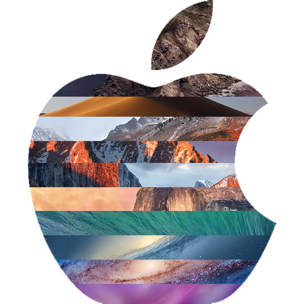

All-In-One Mac Recovery Drive [Guide]
Updated: 08/06/2020
What is an All-in-One Recovery Drive?
If you’re like me and you spend a lot of your time repairing, upgrading, reinstalling or imaging Macs, it can be very time consuming to search for installer files and create USB recovery drives for your particular machine, not to mention including all of tools you may need for a job. An All-in-one recovery drive is meant to simplify this process and give you multiple ways of tackling a problem when you don’t have access to the onboard OS. Using an external recovery drive can assist in tasks such as data recovery, OS upgrading, diagnostics, and much more. In this guide I will show you how to create a drive like this to add to your computer repair toolset.
What you'll need:
- 128GB Flash Drive/External SSD
- DMGs or macOS Installers (10.6-Current)
- A real Mac
- DiskMaker X
- Carbon Copy Cloner or TechTool Pro 11 (optional)
Scenarios where you may need an external recovery drive:
- Your Mac failed a recent software update and you would like to attempt an in-place install of the operating system
- You suspect you may have failing hardware and would like to boot to another enviroment. Sometimes the Apple On-board diagnostics do not tell the whole story.
- Your mac is unable to boot to its OS and you want to attempt non-invasive data recovery.
- You need to manually remove some pesky malware/adware
Downloading MacOS

Depending on your use case, the versions of MacOS that you'll need may vary. I chose to get everything from 10.6-Current (Catalina). There are a few methods for obtaining copies of MacOS.
- Install Homebrew: In my opinion, this is probably the easiest way to obtain old versions of MacOS. I've linked to a different guide for this here.
- Download from the Apple App Store: This option cna be tricky. One, not all of the operating systems are available and many of them can only be downloaded if you have downloaded them in the past. A good option for those who have kept up to date with every major release through the App Store have have it linked to their Apple ID.
- Physical Media: For some older OS, you'll need to obtain an older install media, such as the USB verison of Snow Leopard 10.6 that Apple sells for about $20. Most people will not need to go back to an old OS like this though.
Dividing your drive

Depending on the operating systems you want access to, you'll need to divide your drive accordingly. In this example, I am using a 120GB external SSD and have listed the appropriate partition sizes per recovery enviroment. Each enviroment is different, thus the different partition sizes. If you do not create these partitions prior to restoring a recovery enviroment, you will be leaving a lot of empty space on your drive that you otherwise may not have access to due to partition resizing restrictions. I chose to create a drive that had partitions for OS X 10.6 to macOS 10.15, in addition to my Mac OS PE (create with Tech Tool Pro) and tools because those are the partitions i needed access to. You can create as many or as little partitions as you see fit.
Creating the recovery partitions

Once you have your partitions created, you have a couple different methods to fill them:
- Install Disk Maker: This is an awesome tool created by MacDaddy. I chose to use this option because it takes the tediousneesss out of creating the partitions. All you do is select your partition name, select your Install MacOS.app from your /Applications/ folder and hit "Create Installer". Done. Note: There is a smiliar app called Disk Maker X, but i do not reccommend using this app, esspacially if you are creating recovery enviormnets for older versions of MacOS, such as El Capitan. It is not optimized for every verison of MacOS, and can error out with no real fix in place. You can find the latest version of Install Disk Maker here.
- createinstallmedia command: This is the same method Install Disk Maker uses, just without the GUI. Better for those who are more comfortable with Terminal. You can find the instructions for this method here.
- Restore with Disk Utility: This option should really only be used if your install files are in .DMG format. Disk Utility makes it very easy to restore to a partiton of your choice. This option cannot be used with Install MacOS.app from the App Store.
Adding additional tools
Now that you have your desired recovery partitions, one thing you might want to consider adding is a bootable version of macOS. In the example above, I have created a partition named "macOS PE". You can create this partition by either 1. Cloning your existing system to that partition using a tool like Carbon Copy Cloner, or 2. Use a tool like Tech Tool Pro, which includes a utility called ProToGo that still clones your existing system, but only clones the necessary applications (Terminal, Disk Utility... etc). Either option allows you to boot the computer your working on to an enviroment that is identical to your personal computer.
I have also included a Tools partition that you can put a variety of utilites you may use to get your tasks done. You can put anything you want on here and i recommend formatting this as exFAT incase you want to have access to some Windows/Linux based tools. One tool I put on here is Carbon Copy Cloner, as it can be very handy trying to recovery data from a Mac that fails to boot due to a failing HDD, but the drive itself is still readable.
Booting to your desired partition
This part is easy. Turn off the computer you're working on, plug in your Recovery Drive, turn on the computer while holding Option/Alt, and select your partition.